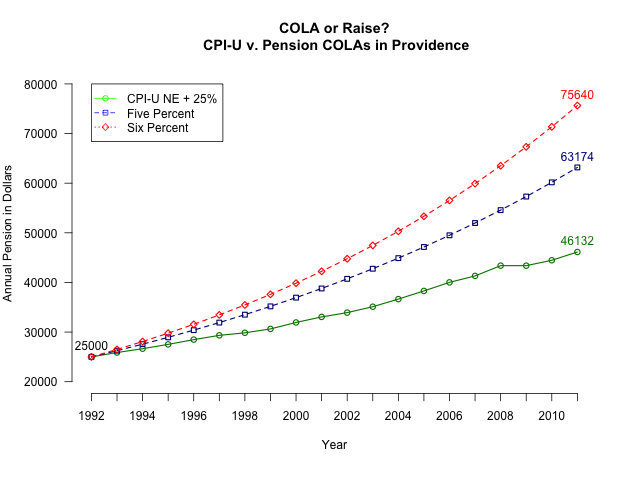

2012-01-25
Ted Nesi has done a pretty solid job tracing the history of some awful decisions made by union-dominated boards that resulted in a significant number of retirees in the early-90s receiving 5% or 6% annually compounded interest on their retirement income. These are often called COLAs, or cost-of-living adjustments.
Today, I am inspired by Nesi's post on the rapid decline of the Providence municipal pension fund health that occurred since 6% "COLA" was introduced in 1989 through today. You see, something has really been bugging me about the conversation on municipal pensions in Rhode Island. A true COLA is key to ensuring that purchasing power is maintained throughout retirement. Essentially, quality of life and ability to buy required goods should be consistent from the day you retire until the day you die. This is a goal that makes a lot of sense. But the cost of goods has not increased 5% or 6% year-over-year ever in the past twenty years 2.
So I chose a key moment in the history of Providence municipal pensions-- a 1991 consent decree 1 that then Mayor Buddy Cianci signed, solidifying and legitimizing the extremely high "COLA" for workers. I wanted to know, "What would a worker retiring in the following year (1992) be making today if they retired with a \$25,000 annual pension and had a 6% 'COLA', 5% 'COLA', or a COLA based on the Northeast CPI-U?" Not wanting to make a key mistake and equate a CPI with a COLA, I increased the CPI-U for each year by 25%, figuring that this is a reasonable approximation of the marginal taxes that would be paid on additional income by these retirees.
I suspected that 5% and 6% do not really result in a cost-of-living adjustment, but rather a clear wage increase for retired workers. I have no problem maintaining parity or near-parity with retirement level income, but there's absolute no reason someone who retired should receive a wage. My support for a true COLA is so strong that I made the adjustment for taxes on income!
What were the results?

A Providence employee who retired in 1992 with a \$25,000 pension would be receiving \$46,132 in 2011 if their retirement was increased by inflation + the marginal tax rate (assumed here as 25%). But a Providence employee who retired with the same pension in 1992 under the conditions in Providence could expect \$63,174 at 5% or \$75,640 at the 5% and 6% rates, respectively. This is a MASSIVE difference which cannot constitute a "COLA".
So I move that we stop referring to these particular pensions as having a "COLA", because what really happened was a fixed raise was created to last for the rest of retirees' lives.
Some additional neat facts:
Over 20 years, an individual who has a 6% raise per year will have collected \$228,672 more than someone who had a COLA. An individual with a 5% raise per year will have collected \$135,681.10 over the same 20 year period.
And of course, here's the code I used to produce the graph above in R3:
compound <- function(start,rate,timespan){
x <- vector(mode = 'numeric', length = timespan)
for(i in 1:timespan){
if(i == 1){
x[i] <- start
}
else{
x[i] <- x[i-1]*(1+rate)
}
}
return(x)
}
inflate <- function(start, inflation){
x <- vector(mode='numeric', length=dim(inflation)[1])
for(i in 1:dim(inflation)[1]){
if(i==1){
x[i] <- start
}
else{
x[i] <- x[i-1]*(1+(1.25*(inflation[i,2]/100)))
}
}
return(x)
}
cpiu <- cbind(seq(from=1992,to=2011), c(0.0, 2.8, 2.4, 2.6, 2.8, 2.4, 1.4,
2.1, 3.4, 2.8, 2.1, 2.8, 3.5, 3.6,
3.6, 2.6, 4.0, 0.0, 2.0, 3.0))
inflation <- data.frame(cbind(cpiu[,1], inflate(25000, cpiu),
compound(25000, .05, 2),
compound(25000, .06, 20)))
names(inflation) <- c('year', 'NECPI.U', 'FivePercent', 'SixPercent')
png(filename="inflation.png", height=640, width=800, bg="white")
par(mar=c(6, 5, 5, 3))
plot(inflation$NECPI.U, type='o', col=rgb(0,0.5,0), ylim=c(20000,80000),
axes=FALSE, ann=FALSE, lwd=1.5)
axis(1, at=1:20, lab=inflation$year)
axis(2, las=1, at=seq(from=20000, to=80000, by=10000))
lines(inflation$FivePercent, type="o", pch=22, lty=2, col=rgb(0,0,0.5),
lwd=1.5)
lines(inflation$SixPercent, type="o", pch=23, lty=2, col='red', lwd=1.5)
title(main="COLA or Raise?\n CPI-U v. Pension COLAs in Providence", col. main="black")
title(xlab="Year")
title(ylab="Annual Pension in Dollars\n")
legend(1, 80000, c('CPI-U NE + 25%', 'Five Percent', 'Six Percent'), col=c( 'green', 'blue', 'red'), pch=21:23, lty=1:3)
text(1,25000, 25000, pos=3, col='black')
text(20, max(inflation$SixPercent), round(max(inflation$SixPercent), 0), pos=3, col='red')
text(20, max(inflation$FivePercent), round(max(inflation$FivePercent), 0) ,pos=3, col=rgb(0,0,0.5))
text(20, max(inflation$NECPI.U), round(max(inflation$NECPI.U), 0), pos=3, col=rgb(0,0.5,0))
dev.off()
This post reflects my personal views and opinions. I am a member of Local 2012 of the RIAFT and was a supporter of the statewide pension reform in the Fall of 2011. I am also a resident of Providence.
See the first link in this post ↩
Consumer Price Index Northeast from the Bureau of Labor Statistics ↩
Sorry this code is not well-commented, but I believe it's fairly straight forward ↩